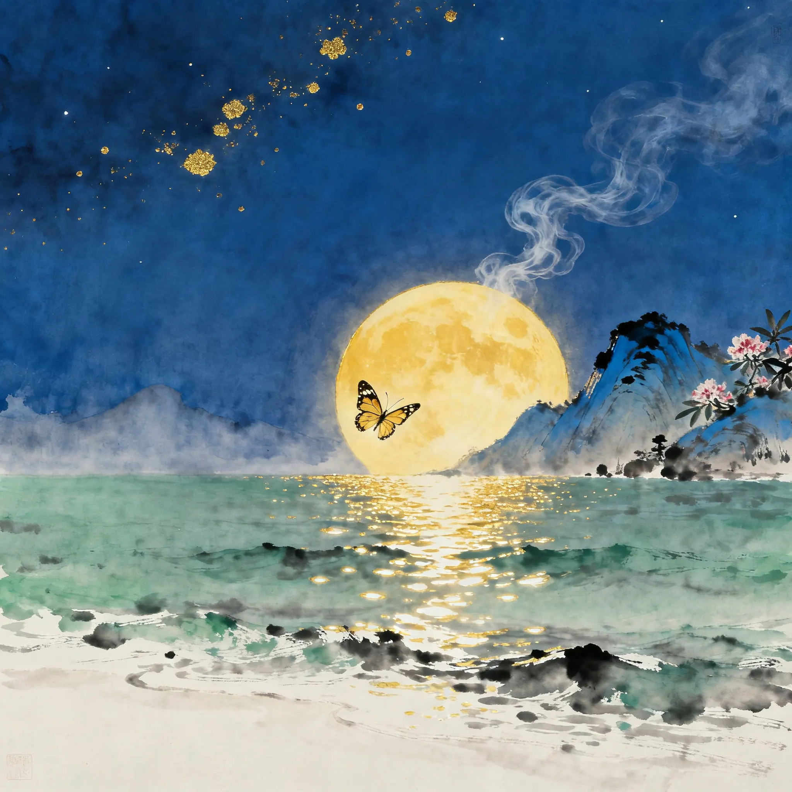
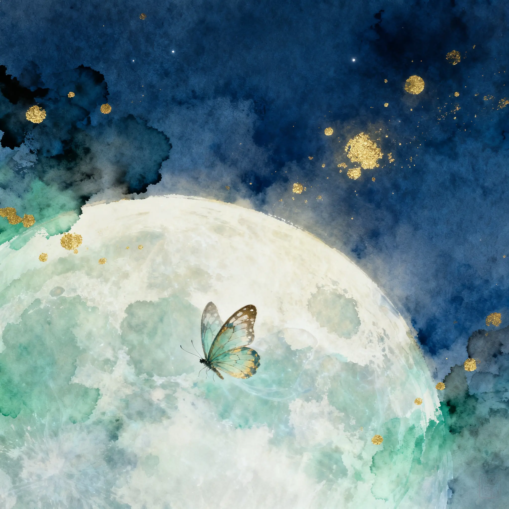
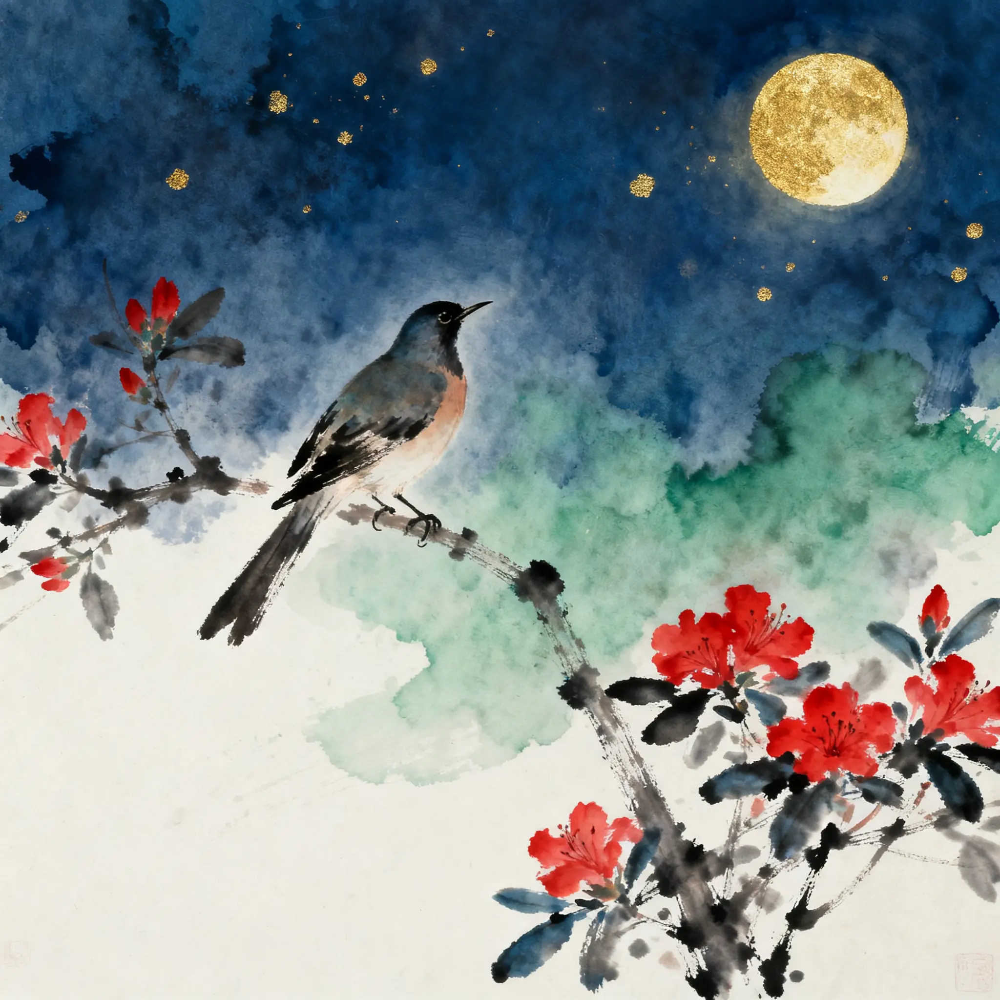
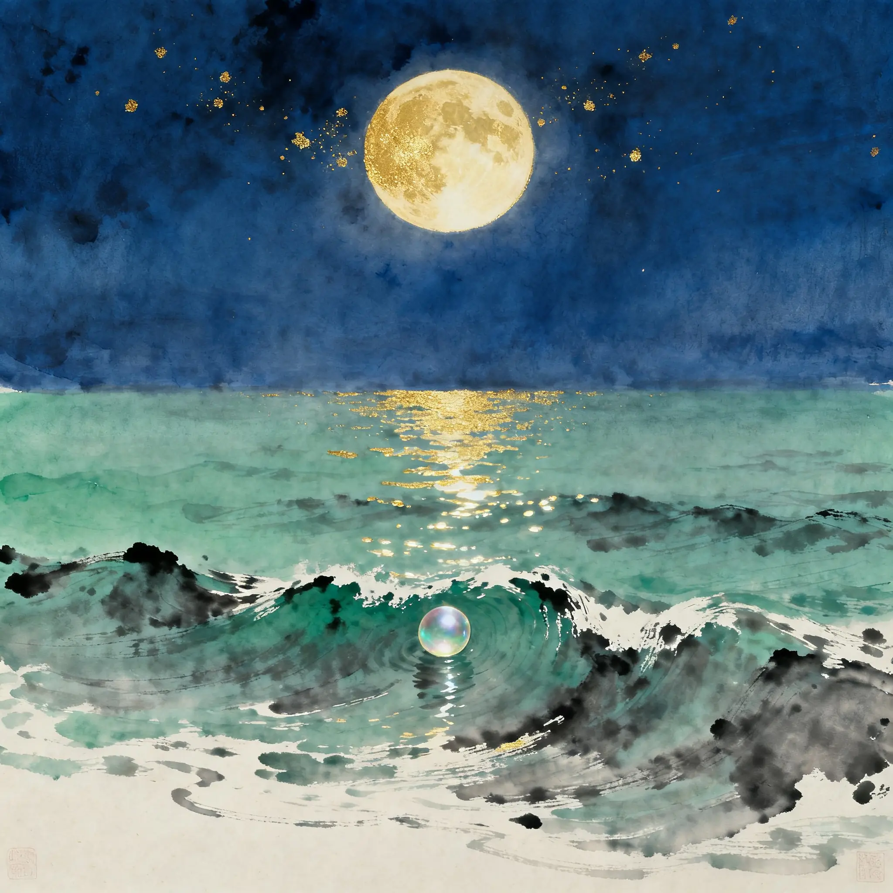
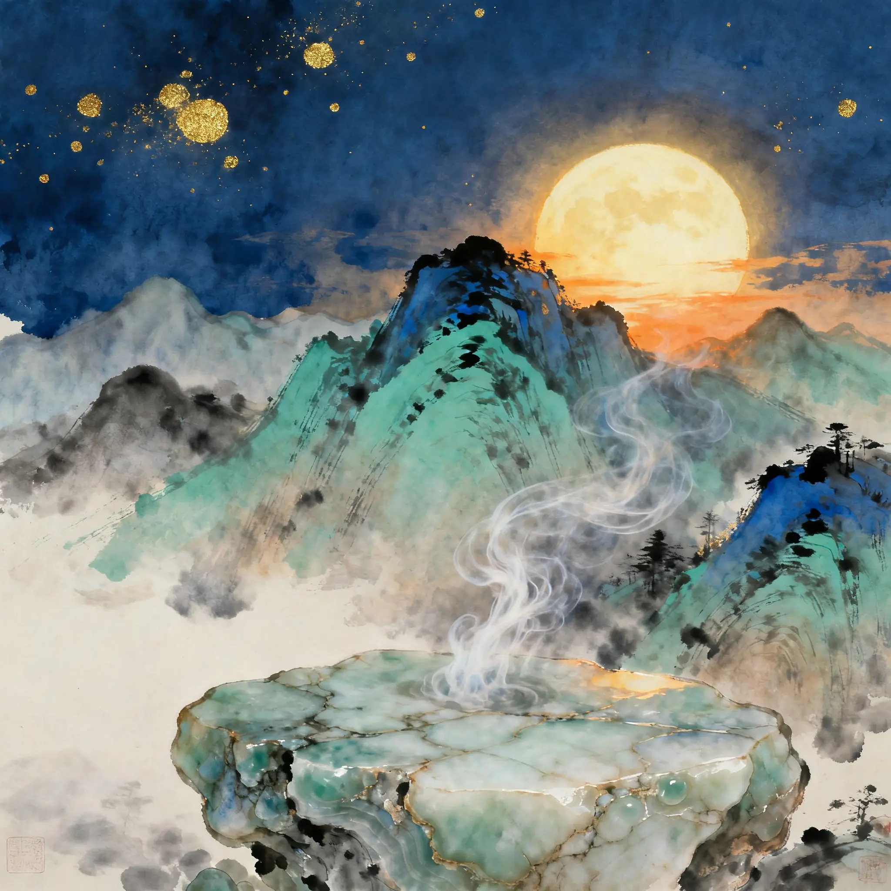
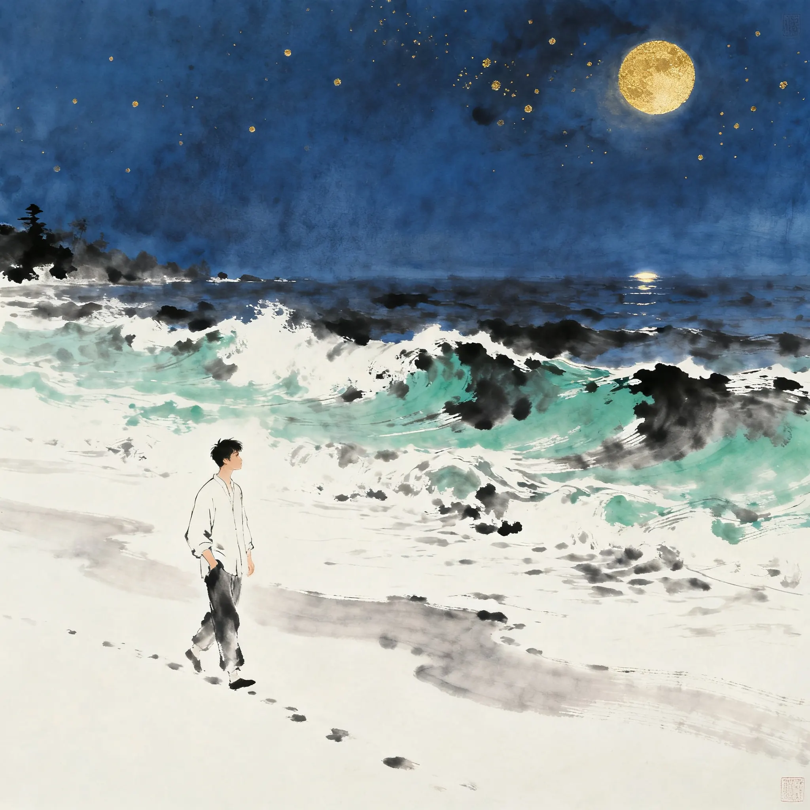
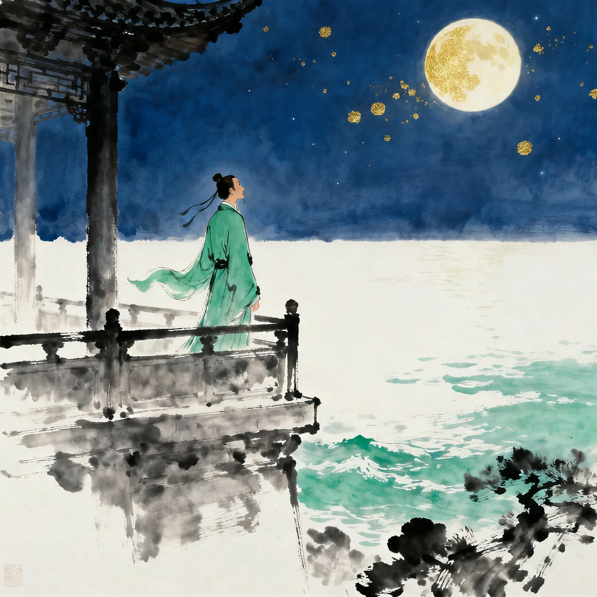

牧之，你最近在追的菲尔兹奖专题里，藏着一首一千二百年前的诗。
拿奖的邓煜哥哥说，这是他有史以来最爱的一首诗——
而这首诗，没人能完全解释。今天我们就来破这个谜。
2026 年，菲尔兹奖（数学界的诺贝尔奖）颁给了四位数学家。其中两位是中国人——王虹和邓煜，这是这个奖 90 年历史上第一次有两位中国籍数学家同届获奖。
邓煜研究的是"随机数据"问题——海浪那样混乱、随机的初始数据，背后的波动方程到底有没有解。他 2011 年从普林斯顿博士毕业，一路做到了芝加哥大学教授。
但这位顶尖数学家，在接受 Quanta 杂志采访时，先打开的却是一首诗。他管它叫："我的有史以来最爱"。
这首诗，就是李商隐的《锦瑟》。写它的诗人，晚唐的李商隐，被称作中国诗歌史上"最朦胧的诗人"——他的诗像是用文字做的谜面，一千二百年来，无数人猜，没人能定论。
一个做数学的人，为什么会爱上一首"解释不完"的诗？这可能正是答案：数学里最迷人的，也是那些解不完的问题。
往下滚，让这首诗一句一句亮起来。读的时候想一想：它到底在说什么？
诗里的四幅画——谜面的四个意象：




Quanta 的采访里，邓煜亲口讲了三个理由——每一个，都像数学家在说话。
律诗八句，每句七字，要讲平仄、要对仗、要押韵。规矩极多。邓煜说："这些模式本身就是美。但它们也限制你的表达。在限制之下你依然能说出这么多东西——这是另一层美。"
"沧海月明"对"蓝田日暖"，"珠有泪"对"玉生烟"——意象成对出现，像方程两边的平衡，像镜像。数学里的对称，在诗里叫对仗。
一个词可能指向古代战争，也可能指向神话传说；一句话可以有几十种解释。数学里最迷人的是解不完的开放问题——李商隐的诗，就是文学的开放问题。

邓煜不是天生爱诗。2017 年的冬天，是他最难的时候：博士后快结束，理想的教职还没有着落，研究卡在瓶颈。他"非常焦虑、非常紧张"。
他没有找朋友倾诉，而是坐火车去了长滩——纽约长岛南岸的海边。订了一家旅馆，沿着海岸线来回走，写诗。
写的是八行格律诗——和李商隐用过的一模一样的形式。他写自己想逃离，写逃离会背叛他做数学的梦想，写海边的潮水"焦虑不安"。
一年后，他拿到了 USC 的教职。再后来，他证明了困扰数学界多年的"随机数据"问题，拿到了菲尔兹奖。
为什么写诗能救他？也许是因为：当生活一团乱麻时，格律给了他一个确定的框架——就像数学里的规则。在规则里，混乱的情绪可以被安放。
现在，认识这首诗的作者。他的一生是个"因果链"问题——每一步选择，都把他推向更深的困境。

生于河南，字义山，号玉谿生。家里排行小，父亲是个小官。
父亲去世。家道中落，他替人抄书、帮人舂米养活母亲和弟弟。早慧的孩子，很早就尝到世态炎凉。
以古文出名。被朝廷重臣令狐楚赏识，收为弟子，亲自教他写骈文。这是他人生的第一块跳板。
考中进士。就在仕途要起飞时，他做了一个改变一生的决定——
娶了王茂元的女儿。问题来了：令狐楚属于"牛党"，王茂元属于"李党"，两党正斗得你死我活。在李商隐眼里，他只是娶了自己爱的人；在别人眼里，他背叛了恩师的门派。
牛党骂他"背恩"，李党不信任他。每次升迁，都有人翻旧账。他一生辗转于各地幕府，做小幕僚，四十六岁郁郁而终（858 年，郑州）。
他留下的诗集成了谜。宋初"西昆体"诗人专门学他，却只学到皮毛。元好问感叹："诗家总爱西昆好，独恨无人作郑笺"——大家都爱他的诗，可惜没人能真正注解他。
一千二百年来，学者们吵成一团。点一下卡片，看看四种主流猜想——注意，至今没有定论。
王夫人早逝，李商隐晚年写诗悼念。"此情可待成追忆"——那个"情"，是没来得及好好珍惜的爱情。支持者：诗里"珠有泪""玉生烟"都是悼亡常用意象。
"五十弦"暗指自己年近五十；一生怀才不遇，回首往事只剩惘然。支持者：李商隐 46 岁去世，这首诗像他给自己的墓志铭。
年轻时与某位女子（或女道士）的隐秘恋情。庄生迷蝶、望帝杜鹃，都是"说不清、放不下"的暗语。支持者：李商隐的《无题》诗都有这个味道。
就是写这把乐器本身：瑟的悲音、古曲的意境。支持者：诗题就叫《锦瑟》，起句"锦瑟无端五十弦"就是咏物起兴。
四种解释，都有道理，都推翻不了别人。邓煜说它"解释不完"——这恰恰是它的伟大：一首诗能容纳一千二百年的争论，本身就是它生命力的证明。
就像数学里，一道好题不会因为没被解出就失去价值——它会让一代代数学家为它着迷。
锦瑟是他的"谜"，下面这些是他的"心"：爱情、亲情、黄昏、嘲讽、孤独。点卡片展开全文。
左右滑动。这些句子活了一千二百年，现在还在被引用。
一千二百年前，李商隐在牛李党争的夹缝里写下这些句子。他没有等到理解，诗却替他等到了。
邓煜在低谷时靠格律诗找回自己，最后拿到了数学界的最高奖。
牧之，如果你以后遇到"解不完的题"——不管是数学题，还是人生题——
记得这首诗：有些东西解释不完，恰恰是它迷人的原因。